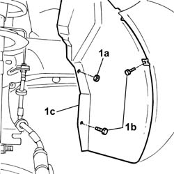
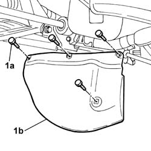
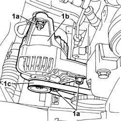

1092B60 alternator drive belt - r + r
- Path
- Procedures > 10 ENGINE UNIT > 1092 VARIOUS ENGINE COMPONENT CONTROLS > 1092B water pump and alternator drive > 1092B60 alternator drive belt - r + r
- Kind
- repair procedure (removal / refitting; the operation number is the code)
- Applies to
- engines: 1.1, 1.2 8v; all production periods
- Interactive page
- https://sloeber94.github.io/elrnDB-fPnd/en/#/2752558
Applies to: engines: 1.1; all production periods
 Removing
Removing
 Refitting
Refitting1. Undo the fixing nut (1a) and the fixing bolts (1b) and move the wheel arch liner (1c) aside.

Applies to: engines: 1.2 8v; all production periods
Removing
Refitting1. Undo the fixing nut (1a) and the fixing bolts (1b) and move the wheel arch liner (1c) aside.
Applies to: engines: 1.1; all production periods
1. Undo the fixing bolts (1a) and remove the timing dust guard (1b).

Applies to: engines: 1.2 8v; all production periods
1. Undo the fixing bolts (1a) and remove the timing dust guard (1b).
Applies to: engines: 1.1; all production periods
1. Loosen the bolts (1a) fixing the alternator (1b) and remove the alternator drive belt (1c) and remove it.

Applies to: engines: 1.2 8v; all production periods
1. Loosen the bolts (1a) fixing the alternator (1b) and release the alternator drive belt (1c) and remove it.
Applies to: engines: 1.1; all production periods
Refitting
RemovingFit the alternator drive belt in position.
1092B64 alternator drive belt - adjust tension
Fit the timing dust guard and tighten the fixing bolts.
Refit the wheel arch liner and tighten the fixing nut and bolts.
Applies to: engines: 1.2 8v; all production periods
Refitting
RemovingFit the alternator drive belt in place.
1092B64 alternator drive belt - adjust tension
Fit the timing dust guard and tighten the fixing bolts.
Refit the wheel arch liner and tighten the fixing bolts and the nut.
Topics linked from this page (3)
- 1092B64 alternator drive belt - adjust tension
- 4450B04 right front wheel r r
- 5510C26 rpm sensor - r+r
Topics that link to this page (15)
- 0510A20 timing gear with belt drive - check - carry out operation with cam cover(s) removed and tappets adjusted
- 0510A30 cam lift - check with cam cover(s) removed
- 1016C10 SINGLE CYLINDER HEAD, REMOVED - OVERHAUL
- 1020D14 FRONT CRANK SHAFT OIL SEAL COVER - R + R AND REPLACE SEALS FOR VERSIONS WITH OIL PUMP ON CRANK SHAFT, TIMING SIDE
- 1020D18 FRONT CRANK SHAFT COVER OIL SEAL - REPLACE
- 1028H20 piston with connecting rod - r r
- 1032B10 toothed timing belt - r + r for timing adjustment or replacement
- 1032B46 toothed drive pulley - r + r
- 1032B52 toothed driven pulley (one) - r + r
- 1032C18 mobile timing system tensioner - r + r for 24 valve engines
- 1032D12 timing system protective cover(s) - r + r
- 1036B10 overhead camshaft - r r on vehicle
- 1088C10 water pump - r + r
- 1092A10 Crankshaft services PULLEY - R.R.
- 5530A10 alternator - r+r